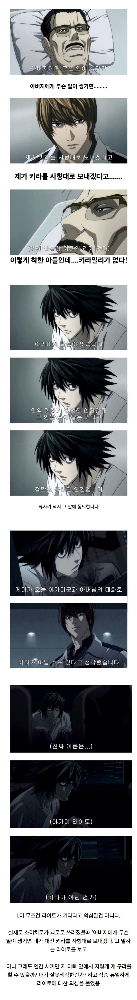

사람 새끼가 아니였던

사람 새끼가 아니였던
그는 신이야!
신세계의 신이다.
저 아버지가 지 아들새끼 키라인거 알고 갔어야했는데
난 그게 항상 아쉬움
마지막에 알고 가족들한테 숨기잖아?
마지막에 알고 간거 아니었음? 애니기준으로 사신의 눈 계약했는데 죽기직전 라이토 보니까 님은 수명 안보였던 표현이 있었던 걸로 기억하는데
ㄴㄴ그때 미사한테 노트 소유권 넘기고 아버지 착각시켜서 성불하게함
ㅇㅇㅇ 알고갔음
근데 노트써서 영혼이 없어졌다능
참고로 소이치로는 성만 적고 이름 안적어서 데스노트 사용한 걸로 되지도 않았음
설정상 라이토 수명은 보여야 함. 왜냐하면 소이치로 죽음 당시 라이토는 칼 슈나이더가 사신의 눈이 있어 노트 소유자란 사실을 들키지 않으려고 노트의 소유권을 포기한 상태였음.
노트의 기억을 잊어버리지 않으려고 소유권을 포기하고 노트를 몸에 붙이고 다녔음.
라이토가 소유권 포기하고 조각 품안에 끼면서 기억 유지하던 때라
라이토 수명 보였을껄?
몰랐음
라이토가 소유권 포기하는 동시에 몸에 지니고 다녀서 기억은 잃지 않아도 소유권이 없기 때문에 소이치로에게는 라이토의 수명이 보였음
그래서 라이토가 키라가 아니구나 다행이다 생각하고 죽었고 류크가 그나마 소이치로는 아들이 키라인 걸 모르고 갔으니 운이 좋다 이런 식으로 이야기했음
그냥 컨셉에 먹힌 금수새끼였네
방에서 폭딸한번 때렸다면
ㄹㅇ
ㅋㅋㅋㅋㅋㅋㅋㅋㅋㅋ
부모님에게 문제가 있는가? (X) 세계관에서 손꼽히는 선량한 부모다
부족하게 자랐나? (X) 유복하게 자랐다
인정을 못 받는 찐따였나? (X) 존나 인싸
대체 어쩌다 저런 개새끼가 나왔단 말인가.
잠깐 자기 기억 다 지웠을 때
하는 행동 보면 착한 놈인건 맞는데
노트 가진 뒤부터 자기 스스로 취해서
또라이로 변한 것일 듯
대충 일반인한테 1조원 정도 주어진다면 그 사람이 이전과 같을까 하면 아니지 않겠냐 정도의 생각으로 만든 캐릭터일듯
부족하지 읺으니 순수악인걸로
남자는 가장 성공하고 능력이 있을때 본인의 본모습이 나오는거지ㅋㅋ
질풍노도의 시기인 고딩 때 주어진 게 크지 않을 까 싶다
???: 하마터면 나는 내 가족을 죽일 뻔 했어
ㅇㅈㄹ ㅋㅋㅋㅋㅋㅋㅋㅋㅋㅋㅋㅋㅋㅋㅋㅋㅋㅋㅋㅋㅋㅋㅋㅋㅋ
키워준 은혜도 모르는 개 인간말종 호로새끼였네 ㅋㅋ
키워준 거 뿐 아니라 여동생 사유 포함해서 죽일 생각도 있었음
데스노트 들켰으면 가족까지 다 몰살 시키려 했거든 ㅋㅋㅋㅋ
신이여
2부 라이토는 지 아빠가 진짜로 죽어갈 때 겉으로는 아들로서 엉엉 울어도 속으로는 어떻게 해야 자연스럽게 우리 아빠가 노트에 멜로 이름 적고 죽어줄까 이딴 생각하고 있었음. 작가는 진심 반 연기 반이었다고 라이토 실드를 쳐줬지만 ㅋㅋㅋㅋ 아빠가 죽어가는데 연기가 1%라도 있으면 호로 새끼지.
ㅋㅋㅋㅋㅋㅋㅋㅋㅋㅋㅋㄹㅇ
라이토는 그냥 인간이 아님